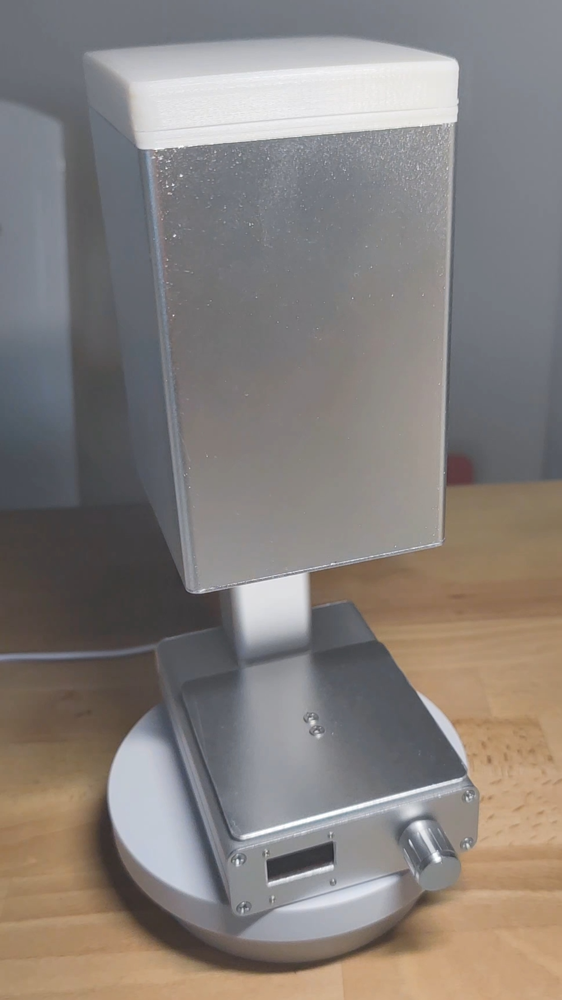

欢迎使用MachineGun Bean Counter， 此物乃受日常称豆之困扰及洋人数豆机之启发，遂DIY自用。 应站友支持制作数台将便利与各位分享。本人能力有限所制之物或不堪入目，请海涵。
此电子秤为个人DIY作品，为降低成本部分组件由FDM 3d打印机打印，部分铝合金型材开槽钻孔由手工打磨，个人兴趣使然，且报以独乐不如众乐的心态设计开发此数豆机，瑕疵在所难免。请勿以市面成熟高端产品来对标。 感谢支持的朋友，让我们一起来品玩咖啡吧。
B站 或 微信公众号搜索 奔IV程序猿